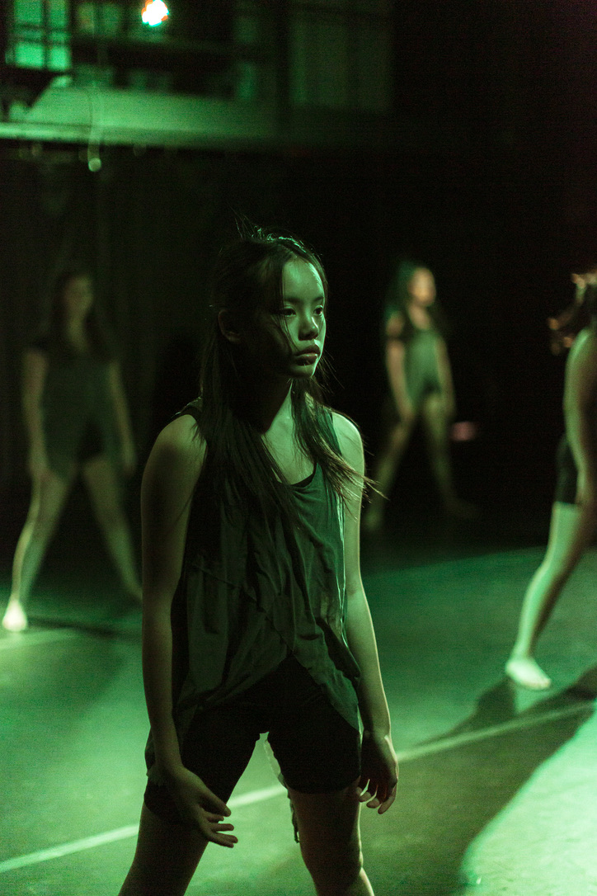
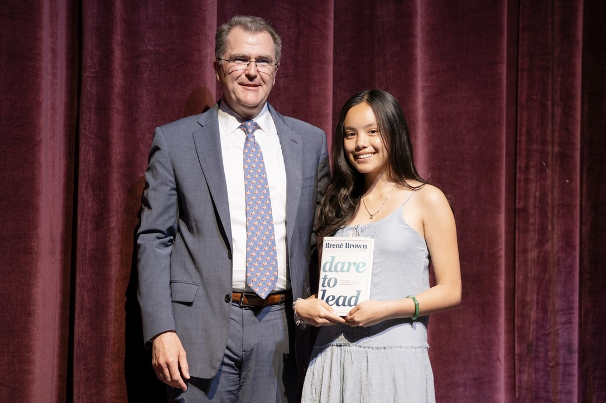
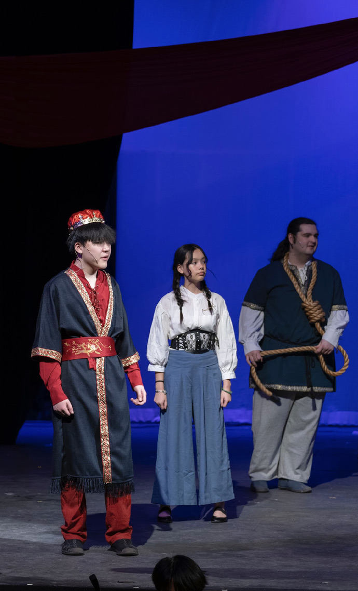
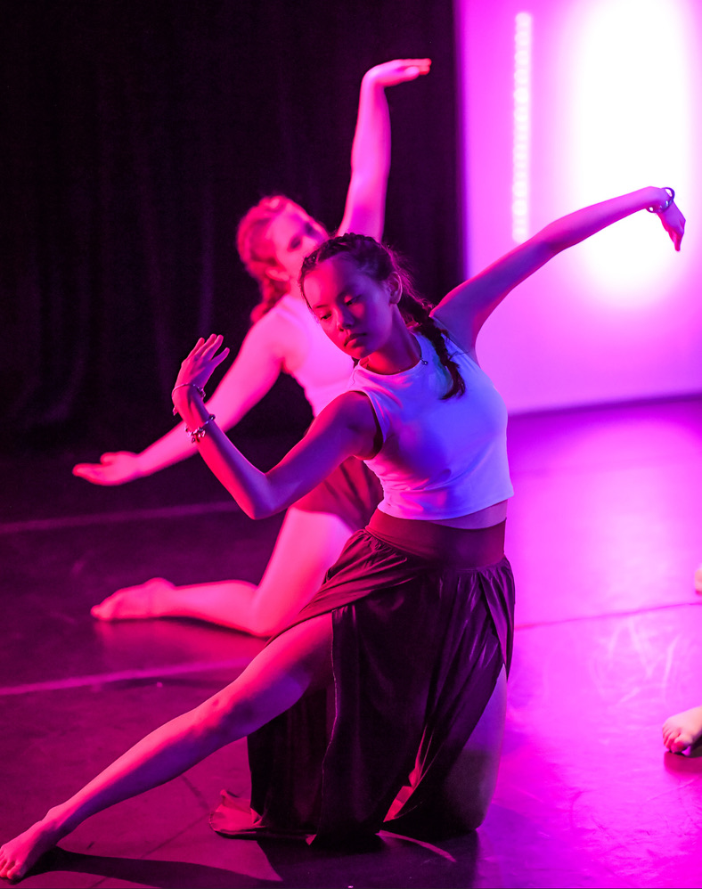
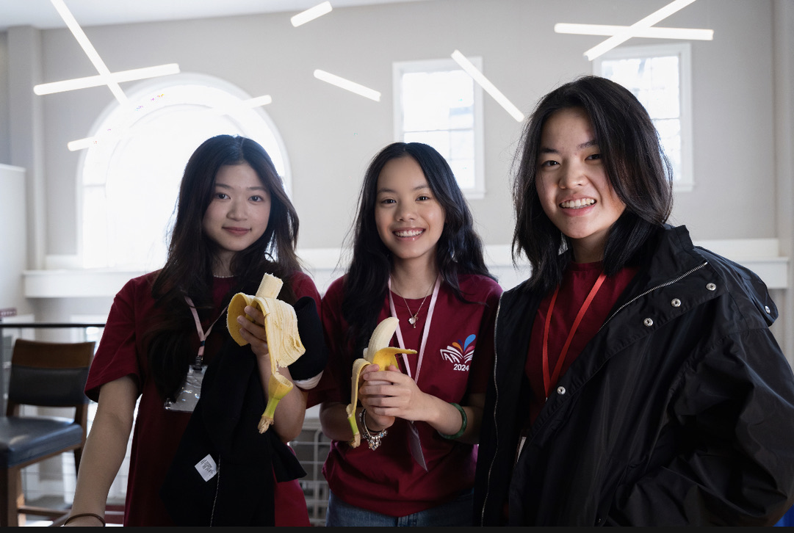

My stories.01
Tutors for a Cause · Co-President
HuếSince 8th grade
Four years inside one small square on my screen — and the summer I finally saw beyond it.

About
Who I am — a daughter, a tutor, a teammate, and a storyteller.


My Story
I am the daughter of two Vietnamese international students who crossed an ocean believing that education could change a life. I grew up American on paper and Vietnamese in the kitchen — turning a jade bracelet around my wrist when I'm nervous, checking Hanoi's weather from a snowed-in New England dorm, and learning that the space between two languages is where my best stories live.
At The Governor's Academy in Byfield, Massachusetts, I co-founded our political and economic journal, The Governor's Review, edit our literary magazine, The Spire, and captain the varsity girls tennis team. I lead our Asian & Asian American Association, and I dance, act, and sing in our performing arts program. Since eighth grade I have tutored English to students in Huế, Vietnam through Tutors for a Cause, which I now lead as Co-President — work that taught me that the quietest students are often the most courageous.
What motivates me is simple: my parents were given a chance through education, and they raised me to pass that chance on. Everything on this site — the essays, the organizations, the performances, the photographs — is a way of doing that.
My stories.01
Tutors for a Cause · Co-President
HuếSince 8th grade
My stories.02
Leadership Recognition
Dareto Lead

My stories.03
The Spire · Editor
InkLaunch day

My stories.04
Theater · School Productions
StageEnsemble

My stories.05
Dance Company
Motion10 years

My stories.06
Asian American Footsteps Conference · Organizer
AAFC2024

Different stages, one voice. Every moment here is me learning to speak up — and then making room for someone else to.
A tutor waiting out a frozen video call. A dancer under pink light. A castmate, an editor, a daughter translating between two languages. On their own, these are just photographs. Together, they tell the story I keep coming back to: my parents crossed an ocean believing that education could change a life, and everything I do is a way of passing that belief on.
What I care about
Whatever education gives me, I find ways to give to someone else — a lesson my parents carried across an ocean.
My students in Huế taught me that silence is often courage gathering itself. I try to listen for it — in others and in myself.
From áo dài to cà phê trứng, I write and perform to keep the recipes, names, and stories my family carried here alive.
Recognition